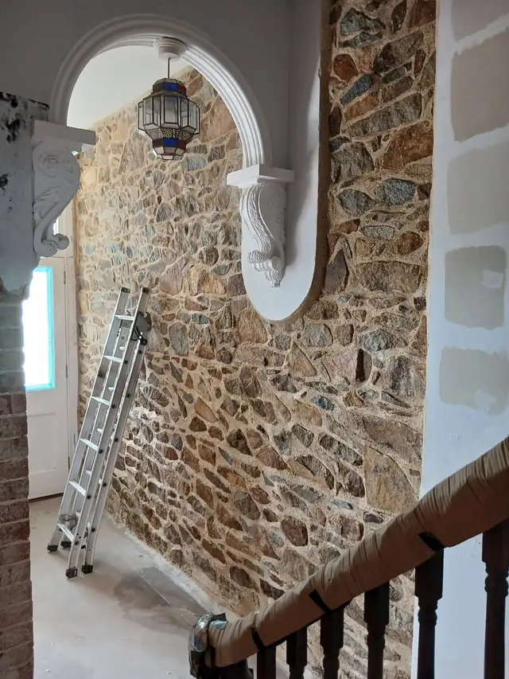
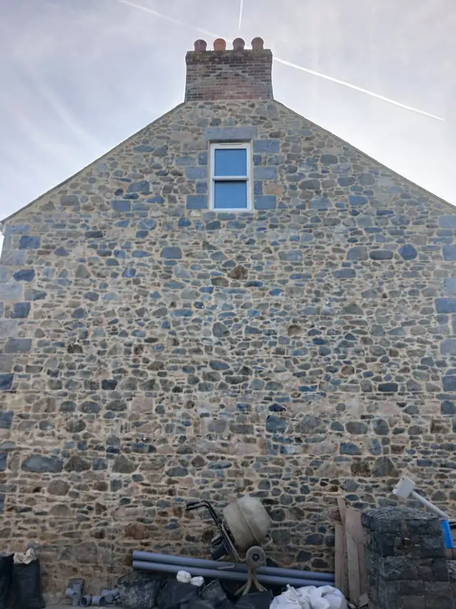
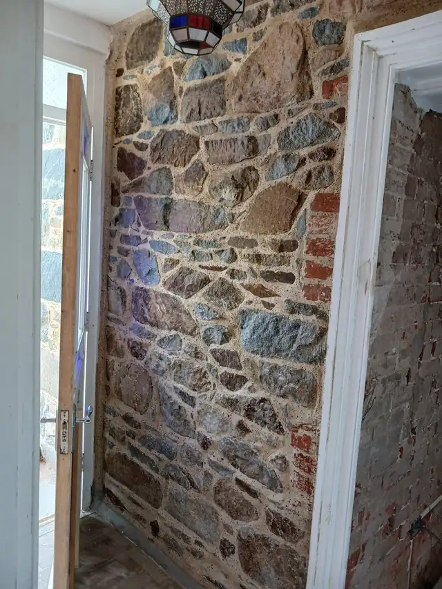
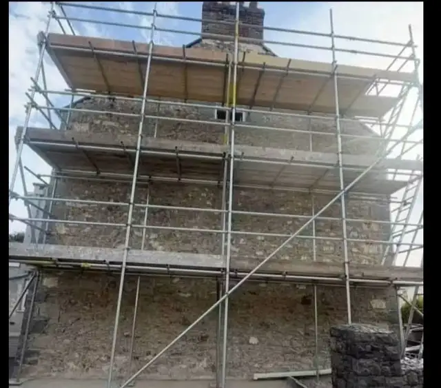

Lime pointing for Guernsey’s stone walls.
Granite gables, house walls and interior feature walls, raked out and repointed in traditional lime mortar.

What we do
Traditional lime pointing, inside and out
Pick a type of wall to see what’s involved.

Exterior walls & gables
Loose, cracked or cement-patched joints let water into a stone wall. We rake them out and repoint in lime, so the wall can breathe and the granite stays protected.
What’s involved
- Old and failing mortar raked out
- Repointed in traditional lime mortar
- Joints finished to suit the stone
- Whole gable ends or single walls

Interior feature walls
Exposed granite makes a striking feature in a hallway, stairwell or alcove. We point it in lime for a clean finish that suits an older house.
What’s involved
- Hallways, stairwells and alcoves
- Joints raked out and pointed in lime
- Neat edges against arches, frames and plaster

Walls after render removal
Once old render comes off, the stone underneath needs pointing before it’s left on show. We work alongside local builders and sandblasting teams, then repoint the wall in lime.
What’s involved
- Pointing straight after render is stripped
- Working with your builder and sandblasters
- Full repoint in lime mortar
Recent job
A gable wall, start to finish
The old render came off back to the granite, and the whole gable was repointed in lime. A month on, fully cured.
Render removal by Bourgaize Builders Ltd.
Talk to us about your wallRecent work
Granite walls, pointed in lime
Outside walls and interior features. Tap a photo to see it larger.
Send us a photo of your wall.
We’ll let you know what it needs and take it from there.

Why lime
The right mortar for an old stone wall
Older granite walls were built with lime, and they last best when they’re repointed with it.
- Lets the wall breathe
- Moisture dries out through the joints instead of being trapped behind hard cement.
- Protects the stone
- Lime is softer than granite, so the joints take the weather and the stone doesn’t.
- Looks right
- A soft, natural finish that sits well with the stone, inside or out.
How a job runs
From first call to finished wall
-
1
Get in touch
Call, WhatsApp or use the form below. Photos of the wall help.
-
2
We take a look
We check the stone and the joints, then price the job.
-
3
Rake out and repoint
Old mortar comes out and the wall is pointed in lime.
-
4
Left to cure
Lime hardens slowly and cures to a hard-wearing finish.
Contact
Get a quote
Tell us about the wall and where it is, and we’ll get back to you. To talk it through, call and ask for Mason.